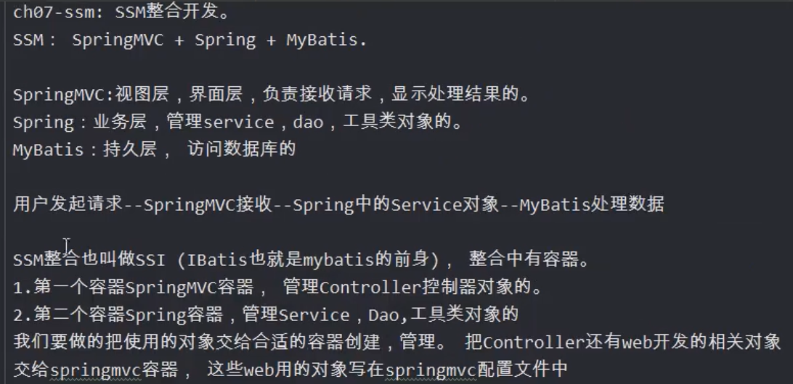

加入依赖
<!--servlet依赖-->
<dependency>
<groupId>javax.servlet</groupId>
<artifactId>javax.servlet-api</artifactId>
<version>3.1.0</version>
</dependency>
<!--jsp依赖-->
<dependency>
<groupId>javax.servlet.jsp</groupId>
<artifactId>jsp-api</artifactId>
<version>2.2.1-b03</version>
<scope>provided</scope>
</dependency>
<!--Spring依赖-->
<dependency>
<groupId>org.springframework</groupId>
<artifactId>spring-context</artifactId>
<version>5.2.5.RELEASE</version>
</dependency>
<!--SpringMVC依赖-->
<dependency>
<groupId>org.springframework</groupId>
<artifactId>spring-webmvc</artifactId>
<version>5.2.5.RELEASE</version>
</dependency>
<!--事务-->
<dependency>
<groupId>org.springframework</groupId>
<artifactId>spring-tx</artifactId>
<version>5.2.5.RELEASE</version>
</dependency>
<dependency>
<groupId>org.springframework</groupId>
<artifactId>spring-jdbc</artifactId>
<version>5.2.5.RELEASE</version>
</dependency>
<dependency>
<groupId>com.fasterxml.jackson.core</groupId>
<artifactId>jackson-core</artifactId>
<version>2.9.0</version>
</dependency>
<dependency>
<groupId>com.fasterxml.jackson.core</groupId>
<artifactId>jackson-databind</artifactId>
<version>2.9.0</version>
</dependency>
<dependency>
<groupId>org.mybatis</groupId>
<artifactId>mybatis-spring</artifactId>
<version>1.3.1</version>
</dependency>
<dependency>
<groupId>org.mybatis</groupId>
<artifactId>mybatis</artifactId>
<version>3.5.1</version>
</dependency>
<dependency>
<groupId>mysql</groupId>
<artifactId>mysql-connector-java</artifactId>
<version>5.1.9</version>
</dependency>
<dependency>
<groupId>com.alibaba</groupId>
<artifactId>druid</artifactId>
<version>1.1.12</version>
</dependency>
插件
<build>
<resources>
<resource>
<directory>src/main/java</directory>
<includes>
<include>**/*.properties</include>
<include>**/*.xml</include>
</includes>
<filtering>false</filtering>
</resource>
</resources>
</build>
<plugins>
<plugin>
<artifactId>maven-compile-plugin</artifactId>
<version>3.1</version>
<configuration>
<source>1.8</source>
<target>1.8</target>
</configuration>
</plugin>
</plugins>
设置web.xml文件为高版本
<?xml version="1.0" encoding="UTF-8"?>
<web-app xmlns="http://xmlns.jcp.org/xml/ns/javaee"
xmlns:xsi="http://www.w3.org/2001/XMLSchema-instance"
xsi:schemaLocation="http://xmlns.jcp.org/xml/ns/javaee http://xmlns.jcp.org/xml/ns/javaee/web-app_3_1.xsd"
version="3.1">
</web-app>
在web.xml
<?xml version="1.0" encoding="UTF-8"?>
<web-app xmlns="http://xmlns.jcp.org/xml/ns/javaee"
xmlns:xsi="http://www.w3.org/2001/XMLSchema-instance"
xsi:schemaLocation="http://xmlns.jcp.org/xml/ns/javaee http://xmlns.jcp.org/xml/ns/javaee/web-app_3_1.xsd"
version="3.1">
<display-name>Archetype Created Web Application</display-name>
<!-- 1、注册中央调度器-->
<servlet>
<servlet-name>myweb</servlet-name>
<servlet-class>org.springframework.web.servlet.DispatcherServlet</servlet-class>
<init-param>
<param-name>contextConfigLocation</param-name>
<param-value>classpath:conf/dispatcher-servlet.xml</param-value>
</init-param>
<load-on-startup>1</load-on-startup>
</servlet>
<servlet-mapping>
<servlet-name>myweb</servlet-name>
<url-pattern>*.do</url-pattern>
</servlet-mapping>
<!-- 2、注册spring的监听器-->
<context-param>
<param-name>contextConfigLocation</param-name>
<param-value>classpath:conf/applicationContext.xml</param-value>
</context-param>
<listener>
<listener-class>org.springframework.web.context.ContextLoaderListener</listener-class>
</listener>
<!-- 3、注册字符集过滤器-->
<filter>
<filter-name>characterEncodingFilter</filter-name>
<filter-class>org.springframework.web.filter.CharacterEncodingFilter</filter-class>
<init-param>
<param-name>encoding</param-name>
<param-value>utf-8</param-value>
</init-param>
<init-param>
<param-name>forceRequestEncoding</param-name>
<param-value>true</param-value>
</init-param>
<init-param>
<param-name>forceResponseEncoding</param-name>
<param-value>true</param-value>
</init-param>
</filter>
<filter-mapping>
<filter-name>characterEncodingFilter</filter-name>
<url-pattern>/*</url-pattern>
</filter-mapping>
</web-app>
applicationContext.xml(spring配置文件)和dispatcher-servlet.xml（SpringMVC配置文件）
以上springMVC与spring的配置文件均在maven项目的resources目录下的conf文件夹下
创建包结构
在maven项目java目录下创建entity（实体类）的包，dao类的包， service类的包，controller类的包
springMVC的配置文件
<?xml version="1.0" encoding="UTF-8"?>
<beans xmlns="http://www.springframework.org/schema/beans"
xmlns:context="http://www.springframework.org/schema/context"
xmlns:mvc="http://www.springframework.org/schema/mvc"
xmlns:xsi="http://www.w3.org/2001/XMLSchema-instance"
xsi:schemaLocation="http://www.springframework.org/schema/beans
http://www.springframework.org/schema/beans/spring-beans-3.0.xsd
http://www.springframework.org/schema/context
http://www.springframework.org/schema/context/spring-context.xsd
http://www.springframework.org/schema/mvc
http://www.springframework.org/schema/mvc/spring-mvc-3.0.xsd">
<!--声明controller对象所在的包-->
<context:component-scan base-package="com.controller"/>
<!--配置视图解析器-->
<bean class="org.springframework.web.servlet.view.InternalResourceViewResolver">
<property name="prefix" value="/WEB-INT/jsp"/>
<property name="suffix" value=".jsp"/>
</bean>
<!--配置注解驱动,结尾为mvc的类
作用：1、响应ajax请求，返回json
2、解决静态资源访问问题
-->
<mvc:annotation-driven/>
</beans>
spring配置文件
<?xml version="1.0" encoding="UTF-8"?>
<beans xmlns="http://www.springframework.org/schema/beans"
xmlns:xsi="http://www.w3.org/2001/XMLSchema-instance"
xmlns:context="http://www.springframework.org/schema/context"
xsi:schemaLocation="http://www.springframework.org/schema/beans http://www.springframework.org/schema/beans/spring-beans.xsd http://www.springframework.org/schema/context https://www.springframework.org/schema/context/spring-context.xsd">
<!--spring配置文件：声明services，dao，工具类等对象-->
<context:property-placeholder location="classpath:conf/jdbc.properties"/>
<!--声明数据源，连接数据库-->
<bean id="dataSource" class="com.alibaba.druid.pool.DruidDataSource" init-method="init" destroy-method="close">
<property name="url" value="${jdbc.mysql.url}"/>
<property name="username" value="${jdbc.mysql.user}"/>
<property name="password" value="${jdbc.mysql.password}"/>
</bean>
<!--SqlSessionFactoryBean创建SQLSessionFactory-->
<bean id="sqlSessionFactory" class="org.mybatis.spring.SqlSessionFactoryBean">
<property name="dataSource" ref="dataSource"/>
<property name="configLocation" value="classpath:conf/mybatis.xml"/>
</bean>
<!--声明mybatis的扫描器，创建dao对象-->
<bean class="org.mybatis.spring.mapper.MapperScannerConfigurer">
<property name="sqlSessionFactoryBeanName" value="sqlSessionFactory"/>
<property name="basePackage" value="com.dao"/>
</bean>
<!--声明services的注解@Service所在的包名位置-->
<context:component-scan base-package="com.service"/>
<!--事务的配置：注解的配置或者aspectj的配置-->
</beans>
mybatis配置文件
<?xml version="1.0" encoding="UTF-8" ?>
<!DOCTYPE configuration
PUBLIC "-//mybatis.org//DTD Config 3.0//EN"
"http://mybatis.org/dtd/mybatis-3-config.dtd">
<configuration>
<!--settings:控制mybatis全局行为-->
<settings>
<!--设置mybatis输出日志-->
<setting name="logImpl" value="STDOUT_LOGGING"/>
</settings>
<!--设置别名-->
<typeAliases>
<!--name：实体类所在的包名-->
<package name="com.dao"/>
</typeAliases>
<!--sql mapper(sql映射文件)的位置-->
<mappers>
<!--
name：是包名，这个包中所有的mapper.xml一次都等被加载
使用package的要求：
1.mapper文件名称和dao接口名必须完全一样，包括大小写
2.mapper文件和dao接口必须在同一目录
-->
<package name="com.dao"/>
</mappers>
</configuration>

基本配置就完成了，接下来就是业务代码的编写了。